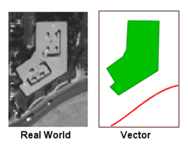
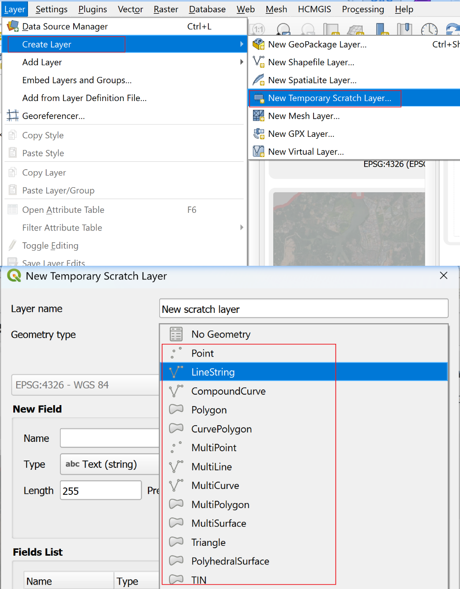
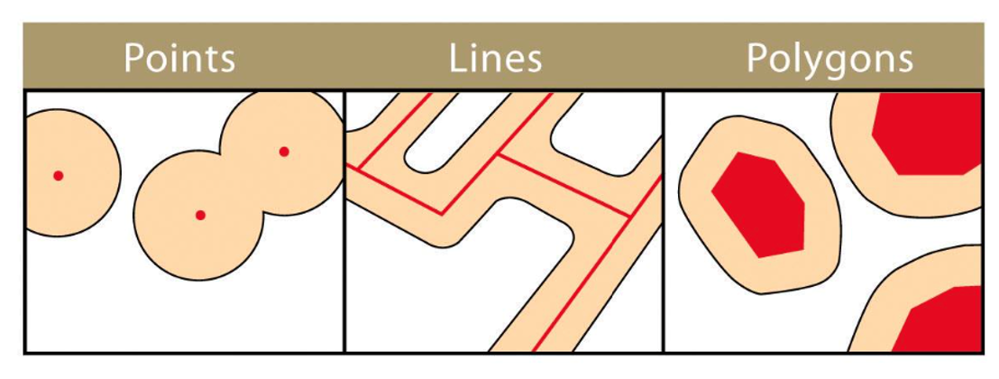
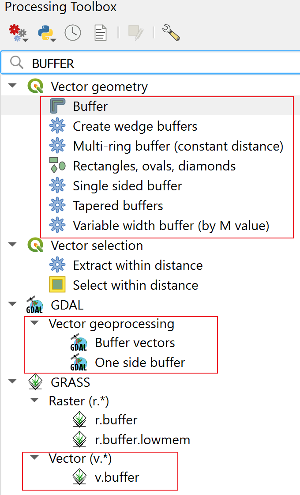
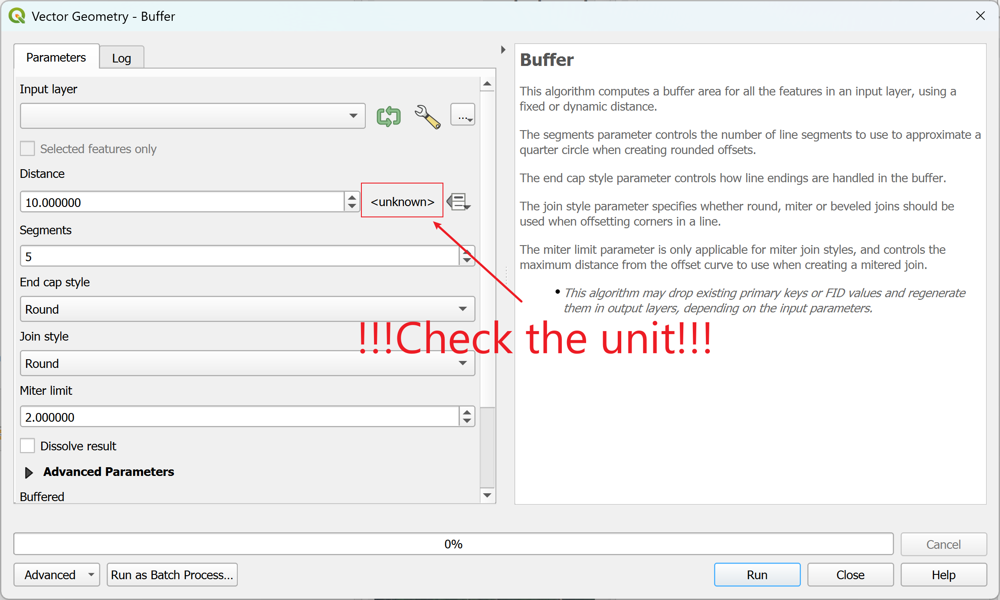
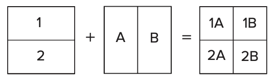
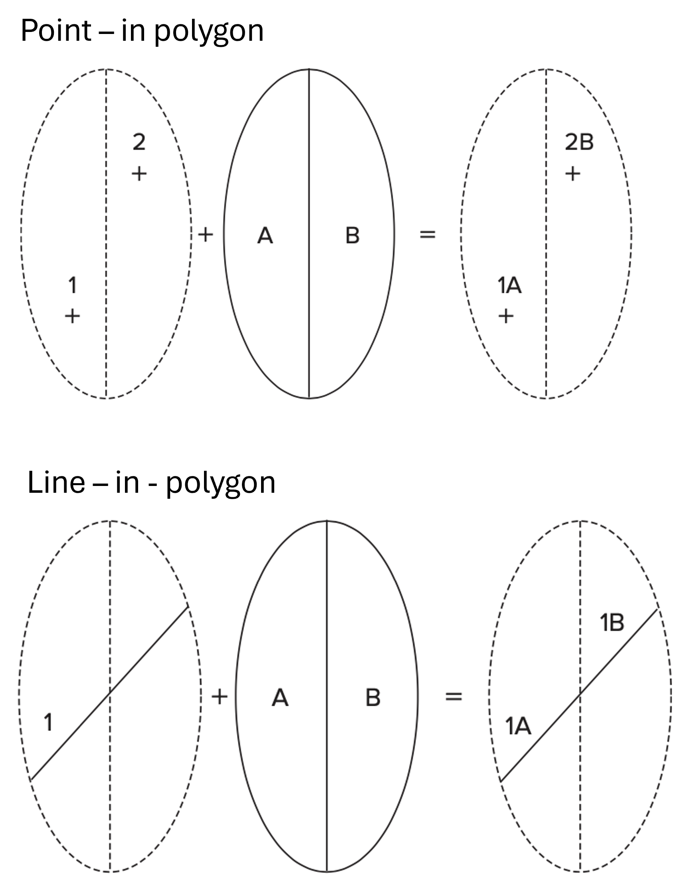
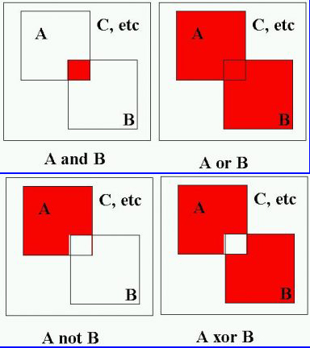
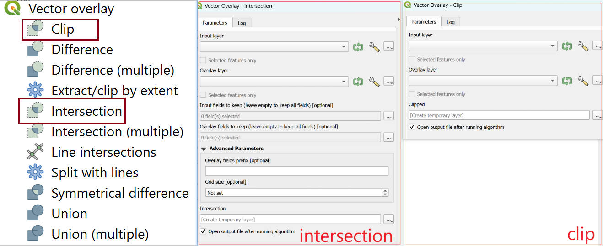
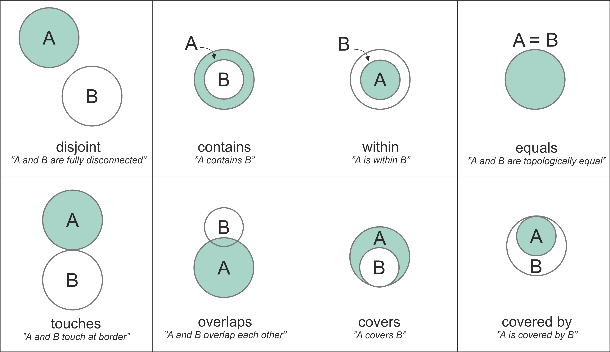

class: center <br> # Spatial Analysis of Urban Data ## Lecture and Tutorial: Spatial Analysis of Vector Data [Bayi Li](mailto:barryli081@gmail.com) <br> <button onclick="window.location.href='index.html'">Go Back to Menu</button> --- name: week6-focus .right_half[ <figure> <p></p> <figcaption>Vector data represents urban features as points, lines, and polygons.</figcaption> </figure> ] ## Week 6 Focus This week introduces the main analytical operations used with vector data. - use vector operations to answer proximity, containment, and overlap questions - distinguish buffering, overlay, and spatial join - transfer attributes between layers with spatial join in QGIS and Python --- .right_half[ <figure> <p></p> </figure> ] ## Vector with QGIS QGIS can create spatially-referenced vector data: - **Points**: bus stops, trees, crimes, MRT stations - **Lines**: roads, rivers, cycling routes - **Polygons**: parcels, planning areas, buildings, land-use zones The geometry type matters because it determines which analysis tools are appropriate. --- .right_half[ **Start a empty jupyter notebook:** ```python import pandas as pd import geopandas as gpd from shapely.geometry import Point, LineString, Polygon df = pd.DataFrame({ "name": ["SUTD", "Tampines"], "lat": [1.3413, 1.3550], "lon": [103.9638, 103.9439], }) points_gdf = gpd.GeoDataFrame( df, geometry=gpd.points_from_xy(x=df["lon"], y=df["lat"]), crs="EPSG:4326", ) ``` ] ## Vector with Python (geopandas) GeoPandas brings spatial data into a **GeoDataFrame**: a pandas-style table with geometry and coordinate reference system (CRS) information. `read_file()` can load common formats such as GeoPackage, Shapefile, and GeoJSON. **create a geodataframe with only two points: ** - SUTD (lat: 1.3413 and lon: 103.9638); - Tampines (lat: 1.3550 and lon: 103.9439) .references[ - [GeoPandas getting-started guide](https://geopandas.org/en/stable/getting_started.html) for more examples. ] Try `row by row` dataframe creation: ```python df = pd.DataFrame( [ ("SUTD", 1.3413, 103.9638), ("Tampines", 1.3550, 103.9439), ], columns=["name", "lat", "lon"], ) ``` --- .right_half[ ```python line_gdf = gpd.GeoDataFrame( {"name": ["SUTD-Tampines"]}, geometry=[ LineString(points_gdf.geometry.tolist()) ], crs="EPSG:4326", ) ``` ] ## Vector with Python (geopandas) GeoPandas brings spatial data into a **GeoDataFrame**: a pandas-style table with geometry and coordinate reference system (CRS) information. `read_file()` can load common formats such as GeoPackage, Shapefile, and GeoJSON. **connect the point of SUTD and Tampines with straightline, therefore, you got one line feature (line geodataframe)** --- .right_half[ ```python simei = Point(103.9532, 1.3434) # (lon, lat) polygon_gdf = gpd.GeoDataFrame( {"name": ["SUTD-Tampines-Simei"]}, geometry=[Polygon(points_gdf.geometry.tolist() + [simei])], crs="EPSG:4326", ) print(polygon_gdf) print(f"Polygon area: {polygon_gdf.to_crs(3414).area.iloc[0] / 1e6:.2f} km²") ``` ] ## Vector with Python (geopandas) GeoPandas brings spatial data into a **GeoDataFrame**: a pandas-style table with geometry and coordinate reference system (CRS) information. `read_file()` can load common formats such as GeoPackage, Shapefile, and GeoJSON. **connect the points of SUTD, Tampines and Simei (third point: lat 1.3434 and lon 103.9532), then, you got a simple polygon feature (polygon geodataframe)** --- .right_half[ ```python import matplotlib.pyplot as plt ax = polygon_gdf.plot(color="lightblue", edgecolor="steelblue") line_gdf.plot(ax=ax, color="red", linewidth=2) points_gdf.plot(ax=ax, color="black", zorder=3) plt.show() ``` ] ## Vector with Python (geopandas) GeoPandas brings spatial data into a **GeoDataFrame**: a pandas-style table with geometry and coordinate reference system (CRS) information. `read_file()` can load common formats such as GeoPackage, Shapefile, and GeoJSON. **Plot the created point, line and polygon** --- ## Why both QGIS and Python QGIS is graphical user interface (GUI) software, so you can see the result of each operation immediately. Python is a powerful programming language that makes work repeatable and scalable, so it is especially efficient when handling many files or large datasets. With AI-assisted coding, it also integrates with other tools and workflows far more easily than traditional GUI software. <xL>We recommend learning both, but you can choose your own path (which is why Assignment Part I accepts either). This course focuses on Python, with QGIS as a tool to help you understand each method.</xL> --- name: vector-core ## Vector Analysis and Why Vector Analysis Matters Vector analysis is useful when we want to study discrete features. Typical urban questions include: - what is near what? - what falls inside which boundary? - which features overlap? - how far apart are important locations? --- .right_half[ <figure> <p></p> <figcaption>Proximity questions are often solved through buffering.</figcaption> <figsubcaption>Source: Egenhofer et al. (1992) and https://pythongis.org/part2/chapter-06/nb/05-spatial-queries.html</figsubcaption> </figure> ] ## Buffering Buffers are among the most common vector-analysis tools used to answer questions of proximity. A buffer creates a zone around a point, line, or polygon at a chosen distance. Example question: <xL>Which grocery shops are within 200 m of my home?</xL> --- .right_half[ <figure> <p></p> </figure> ] ## Buffering in QGIS QGIS provides multiple buffering tools because different workflows need different assumptions. In practice, always check: - the CRS and unit of measurement - whether the buffer should dissolve - whether the output should preserve feature identity --- ## Buffering in QGIS ### Comman pitfall: are you measuring unit is in metre? <div align="center"> <figure> <p></p> </figure> </div> --- .right_half[ ```python points_3414 = points_gdf.to_crs(3414) buffer_gdf = points_3414[points_3414["name"] == "SUTD"].copy() buffer_gdf["geometry"] = buffer_gdf.buffer(2000) # 2 km print(f"Buffer area: {buffer_gdf.area.iloc[0] / 1e6:.2f} km²") ``` ] ## Buffering in Python (geopandas) We continue with `points_gdf` and `line_gdf` from the earlier slides. `GeoSeries.buffer(distance)` uses the **same unit as the CRS**, the same pitfall as in QGIS. <xL>Which of these places are within 2 km of SUTD?</xL> **Create a 2 km buffer around SUTD** EPSG:4326 is in degrees -> buffer(2000) would mean 2000° Project to SVY21 (EPSG:3414) so distances are in metres .references[ - [GeoPandas `buffer()` documentation](https://geopandas.org/en/stable/docs/reference/api/geopandas.GeoSeries.buffer.html) ] --- .right_half[ <figure> <p></p> </figure> ] ## Overlay Overlay is one of the key GIS functions for combining data from two or more layers covering the same area. It can be used to: - compare thematic layers visually - combine geometries and attributes - create new spatial datasets for analysis --- .right_half[ <figure> <p></p> </figure> ] ### Overlay Methods Common overlay relationships include: 1. Point-in-polygon: Identifies points located within polygons. 2. Polygon-on-point: Identifies polygons containing or intersecting points. 3. Line-on-line: Identifies intersections or overlaps between lines. 4. Line-in-polygon: Extracts line features or segments located within polygons. 5. Polygon-on-line: Identifies polygons intersected by lines. 6. Polygon-on-polygon: Identifies overlapping polygon area. 7. Point on point: Identifies coincident points or points within a specified tolerance. The attributes of latter will be joined to the first one --- .right_half[ <figure> <p></p> <figcaption>Map overlays can be understood through Boolean logic.</figcaption> <figsubcaption>Source: https://eeg260.academic.wlu.edu/course-notes/spatial-overlays-and-querying/map-overlays-and-boolean-logic/</figsubcaption> </figure> ] ### Polygon-on-polygon with Boolean Operators 1. **Intersection (AND)**: keeps only the shared area 2. **Union (OR)**: combines everything from both layers 3. **Difference (NOT)**: subtracts one layer from another 4. **Symmetrical Difference (XOR)**: keeps areas in either layer, but not both --- .right_half[ ```python # Combine all three places into one layer (in metres) simei_gdf = gpd.GeoDataFrame( {"name": ["Simei"]}, geometry=[simei], crs="EPSG:4326" ) places = pd.concat( [points_gdf, simei_gdf], ignore_index=True ).to_crs(3414) # Keep the places that fall inside the buffer sutd_zone = buffer_gdf.geometry.iloc[0] inside = places[places.within(sutd_zone)] print(inside["name"].tolist()) # ['SUTD', 'Simei'] ``` ] ## Buffer + Overlay: Answering the Question 1. create a buffer around the feature of interest 2. overlay that buffer with another layer 3. keep only the features that intersect the buffer This is how a spatial question becomes an analytical workflow. A buffer by itself is only a zone. To answer a proximity question, select the features that **fall within** it. <xL>How many MRT stations are within 2 km of SUTD?</xL> Fact: Simei (about 1.2 km away) is inside; Tampines (about 2.7 km away) is not. --- .right_half[ <figure> <p></p> <figcaption>The overlay toolbox in QGIS. Clip and intersection solve related but different problems.</figcaption> </figure> ] ## Clip vs Intersection - **Clip** uses one layer to trim another and usually keeps attributes from **the input layer** > What is the total length and geographic distribution of designated cycling paths located strictly within the boundaries of Tampines? - **Intersection** creates new features from overlap and usually retains **attributes from both layers** > How do varying land use classifications overlap with planning areas in Singapore, and what specific land uses exist within each planning areas? --- .right_half[ <figure> <img src="imgs/vector/geoprocessing_typology_tools.jpg" class="zoomable" width="100%"> <figcaption>Union, Intersect, Identify, Clip, Dissolve, Merge, Buffer.</figcaption> <figsubcaption>Source: QGIS Geoprocessing Tools & Operators. https://www.youtube.com/watch?v=tznoUk7GwLs</figsubcaption> </figure> ] # Vector data analysis with QGIS Union: Combines two polygon layers and retains all areas and attributes from both layers. Intersect: Extracts overlapping areas between layers and combines their attributes. Identify: Displays the attributes of a selected spatial feature. Clip: Extracts features within the boundary of another layer. Dissolve: Combines adjacent features based on shared attribute values. Merge: Combines multiple layers of the same geometry type into one layer. Buffer: Creates zones at a specified distance around spatial features. --- .right_half[ <figure> <p></p> <figcaption>Spatial predicates decide which features are matched in a spatial join.</figcaption> </figure> ] ## Spatial Join with QGIS A **spatial join** transfers attributes from one layer to another based on **location** rather than a shared ID field. Geometries stay unchanged; only the attribute table grows. **Processing Toolbox → Vector general → Join attributes by location** 1. **Join to features in**: the target layer (preschool points) 2. **Where the features**: the spatial predicate, e.g. *intersect*, *are within*, *contain* 3. **By comparing to**: the join layer (subzone polygons) 4. **Fields to add**: keep only what you need 5. **Join type**: one-to-many or *take attributes of the first matching feature only* To summarise instead of copy, use **Join attributes by location (summary)** or **Count points in polygon** (number of preschools per subzone). --- ### Practice: Spatial Join with Singapore Open Data <xL>Which subzone does each preschool in Singapore fall in, and which subzones have the most preschools?</xL> **Data sources** (download as GeoJSON from data.gov.sg): | Layer | Dataset | Publisher | Features | |---|---|---|---| | Points | [Pre-Schools Location](https://data.gov.sg/datasets/d_61eefab99958fd70e6aab17320a71f1c/view) | ECDA | 2,290 preschools | | Polygons | [Master Plan 2019 Subzone Boundary (No Sea)](https://data.gov.sg/datasets/d_8594ae9ff96d0c708bc2af633048edfb/view) | URA | 332 subzones | ## Spatial Join with QGIS 1. Load both layers and export them to SVY21 (EPSG:3414) 2. *Join attributes by location*: preschools **are within** subzones, add `SUBZONE_N` and `PLN_AREA_N` 3. *Count points in polygon*: subzones as polygons, preschools as points 4. Style the count with a graduated colour map --- .right_half[ ```python import geopandas as gpd preschools = gpd.read_file("preschools.geojson").to_crs(3414) subzones = gpd.read_file("subzones.geojson").to_crs(3414) # 1. Join attributes by location joined = gpd.sjoin( preschools, subzones[["SUBZONE_N", "PLN_AREA_N", "geometry"]], how="left", predicate="within", ) print(joined["SUBZONE_N"].isna().sum()) # 0 unmatched # 2. Count points in polygon counts = joined.groupby("SUBZONE_N").size().rename("n_preschools") subzones = subzones.merge(counts, on="SUBZONE_N", how="left") subzones["n_preschools"] = subzones["n_preschools"].fillna(0).astype(int) print(subzones.nlargest(3, "n_preschools")[["SUBZONE_N", "n_preschools"]]) # TAMPINES EAST 72, WOODLANDS EAST 54, ALJUNIED 40 subzones.plot(column="n_preschools", cmap="Blues", legend=True) ``` ] ## Spatial Join with Python (geopandas) `gpd.sjoin(left, right)` is the geopandas equivalent of *Join attributes by location*: rows of the **left** layer gain the attributes of the **right** layer features they match. <xL>Which subzone does each preschool in Singapore fall in, and which subzones have the most preschools?</xL> | QGIS | geopandas | |---|---| | Join to features in | `left` (preschools) | | By comparing to | `right` (subzones) | | Where the features | `predicate="within"`, `"intersects"`, `"contains"` | | Fields to add | select columns of `right` | | Discard records which could not be joined | `how="inner"` (vs `"left"`) | | Count points in polygon | `groupby().size()` + `merge()` | As in QGIS, both layers must share a CRS; `sjoin` warns if they do not. .references[ - [GeoPandas `sjoin()` documentation](https://geopandas.org/en/stable/docs/reference/api/geopandas.sjoin.html) ] --- ## Reading Material - Kang-tsung Chang and Carl M. Chang (2019), Introduction to Geographic Information Systems, 9th Edition, Chapter 11 - Geospatial Analysis, 7th Edition, 2024 - de Smith, Goodchild, Longley et al. https://spatialanalysisonline.com/ - QGIS documentation on vector geoprocessing tools - GeoPandas user guide: [Merging data (spatial joins)](https://geopandas.org/en/stable/docs/user_guide/mergingdata.html) --- <xL>Continue with Lecture: </xL><button onclick="window.location.href='pattern.html'">Go to Spatial Pattern Analysis</button> <xL>Back to course menu: </xL><button onclick="window.location.href='index.html'">Go Back to Menu</button>